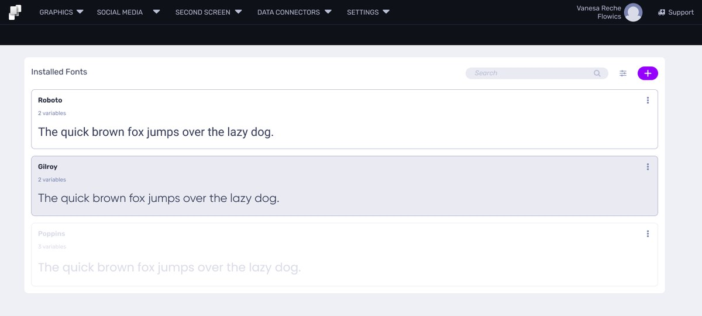
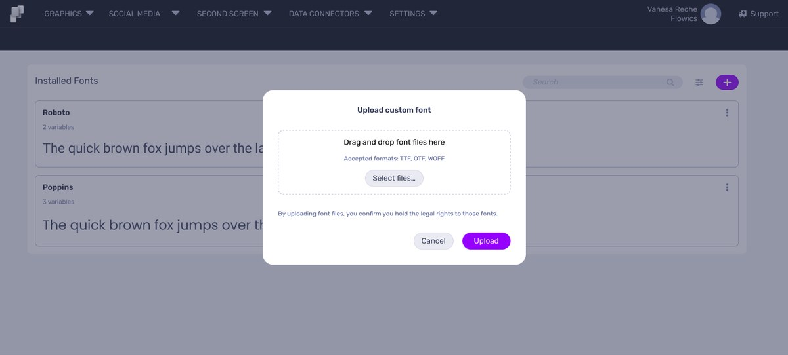
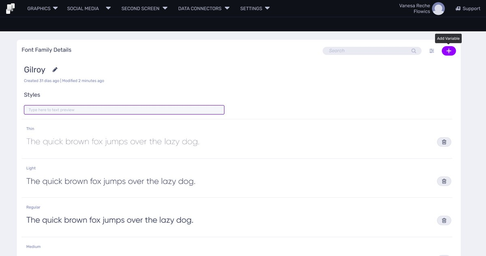
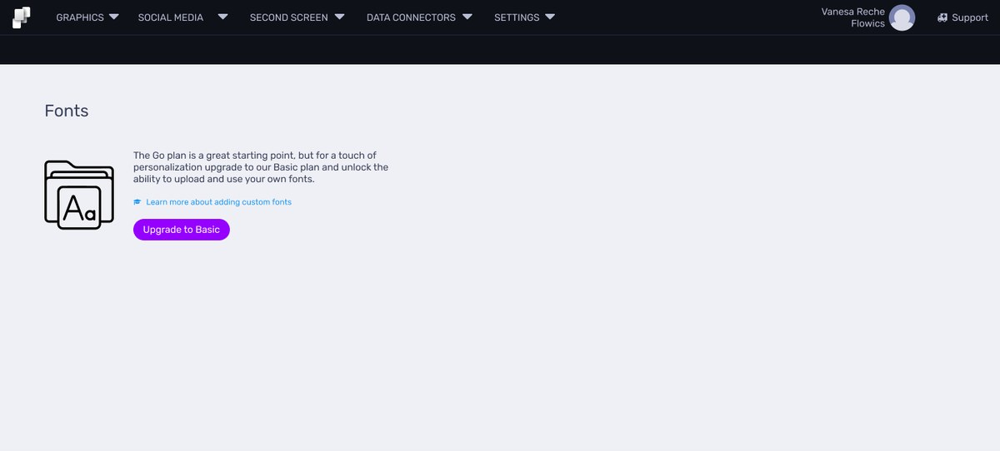

Case Study 03
Custom Fonts — Self-Serve Typography
Turning a manual, support-dependent process into a self-serve feature.

✅ Available in the free trial — these screens aren't under NDA.
Overview
Before this initiative, adding a custom font to Viz Flowics meant contacting support: users sent over their font files, and support manually installed them into each company's account, one at a time. As part of a broader self-serve push, this became an opportunity to give users direct control over their own brand typography.
The Problem
There was no self-service path for something as basic as staying on-brand. Every font request depended entirely on support's availability and manual effort.
- No self-serve path — uploading a font meant emailing support directly.
- Manual, one-off installs — support loaded each font into each company's account individually.
- Didn't scale — every new customer added more manual work, not less.
This wasn't a missing feature — it was an operational bottleneck disguised as one.

The self-serve upload flow — drag and drop custom font files (TTF, OTF, WOFF).
My Approach
I designed an end-to-end font management system that let users upload, organize, and manage their own custom fonts — no support ticket required.
- Self-serve upload — drag-and-drop TTF/OTF/WOFF files, with format validation up front.
- Font family dashboard — a central place to see every installed font, with live text previews.
- Per-family detail view — every weight variant, from Thin to Heavy, editable and previewable individually.
- Plan-based feature gating — tied into the broader self-serve model, with a clear upgrade path for lower-tier plans.
This built directly on the self-serve foundation established in the Product-Led Growth initiative — feature gating, upgrade prompts, and plan structure all followed the same underlying system.

Font family detail — every weight variant with a live text preview.

Feature gating in practice — lower-tier plans see a clear upgrade prompt.
Impact
- Removed support as a dependency — users manage their own fonts end-to-end.
- Cut turnaround from days to minutes — from waiting on support to a self-serve upload.
- Extended the self-serve strategy into a new, brand-critical part of the product.
What This Shows
A small, seemingly isolated request — "let me upload my own font" — revealed a much bigger opportunity: replacing manual operational work with a scalable, self-serve system.